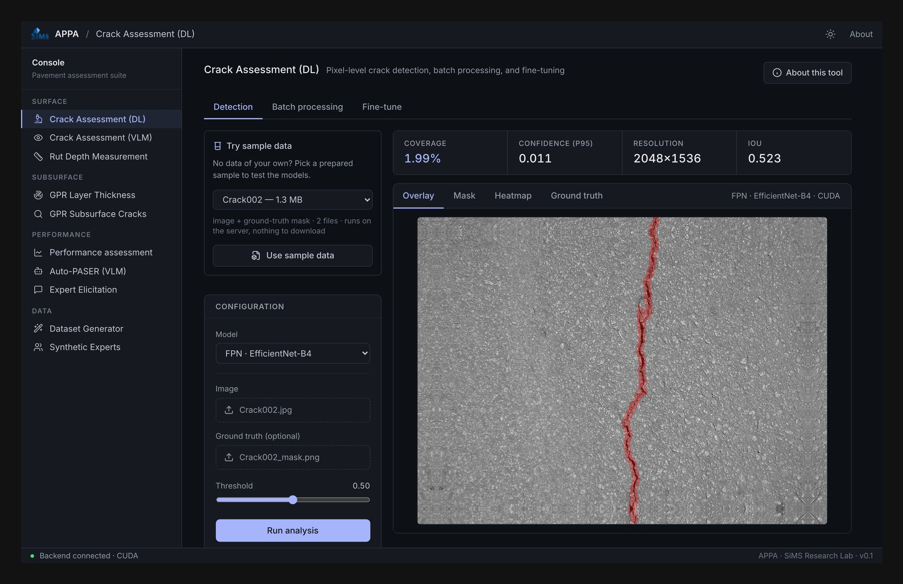
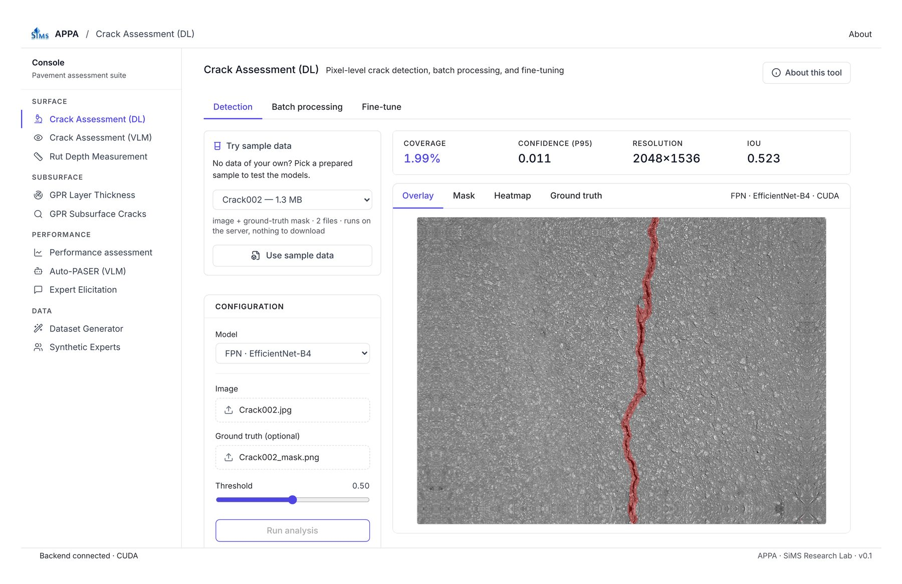

Making Infrastructure Condition Assessment Measurable, Auditable & AI-Driven
I build systems that transform subjective civil engineering inspections into auditable numbers. Combining deep learning, multi-sensor data fusion—Ground-Penetrating Radar, acoustics, UAV imagery, IoT telemetry—and LLM decision-support platforms into production-grade software engineers can run.
Researcher & System Architect for Civil Assets
Current Appointment
Postgraduate Researcher Fellow
Department of Construction Management and Innovation, The Hong Kong Polytechnic University (PolyU)
Doctoral Distinction
PhD in Civil Engineering (2026)
Awarded under the Hong Kong PhD Fellowship Scheme (HKPFS).
Dissertation: Integrated Pavement Performance Assessment System Using Multi-Sensing Technologies.
Global Academic Mobility
Postgraduate Visiting Researcher
Department of Civil Engineering & Applied Mechanics, McGill University, Canada.
Winter road surface condition modeling, remote sensing analytics, and Multimodal LLM integration for climate resilience.
What I Work On
Bridging computer vision, non-destructive sensing, LLM synthetic experts, sustainable materials, and mathematical optimization for built environment infrastructure.
Automated Condition Assessment
Segmentation and detection models for cracks, rutting, and surface distress (SegFormer, FPN, YOLOv8, SAM 3). Every prediction is strictly validated against measured ground truth rather than eyeballed visual estimates.
Subsurface & Non-Destructive Sensing
High-frequency Ground-Penetrating Radar (GPR) signal processing, layer interfacing, pavement thickness evaluation, bridge-deck rebar recognition, cover depth measurement, and early-stage corrosion assessment.
Utility Management Using Sensing Technologies
AIoT data pipelines and machine learning algorithms operating on hydrophone and noise-logger telemetry to detect, classify, and pinpoint leaks in live urban water distribution networks under operational noise, as well as AI-driven sewer condition assessment and defect recognition.
Decision Support & LLMs
Zero-shot Multimodal Large Language Models (MLLMs) acting as synthetic experts for visual distress evaluation, fuzzy AHP, deductive indices, and LLM-assisted maintenance prioritization platforms.
Sustainable Materials & Byproduct Utilization
Life Cycle Assessment (LCA) and experimental characterization of industrial byproducts—ferrochrome slag, fly ash, olive cake ash, and zeolite—for eco-friendly concrete, high-temperature resilience, and green soil stabilization.
Infrastructure Economics & Construction Project Analytics
Game-theoretic Nash equilibria for contractor-subcontractor win-win payment term negotiations, portfolio cash flow optimization, risk sharing, and multi-objective project scheduling under budget constraints.
APPA — Automated Pavement Performance Assessment
Research platform · Ten analysis tools · One unified console connecting multi-sensor raw data to auditable condition ratings.


Crack002 sample, FPN · EfficientNet-B4 on CUDA.
Coverage 1.99 %, IoU 0.523 against the supplied ground-truth mask.
IoU is unforgiving on hairline cracks: a one-pixel offset along a
three-pixel-wide crack costs a third of the score.
Selected Publications
Selected peer-reviewed articles from 48 total publications (35 journal articles, 21 Q1, 26 first/corresponding author, >900 citations, h-index 17).
Pavement thickness evaluation using GPR and fuzzy logic
Develops an automated GPR signal processing and fuzzy logic model for non-destructive layer thickness assessment across asphalt and granular base courses with sub-centimeter accuracy.
Leveraging large language models as synthetic experts: a methodology and validation framework for pavement performance assessment
Presents a pioneering zero-shot framework deploying Multimodal LLMs (MLLMs) as synthetic experts to interpret distress imagery, validated against expert engineering panels.
Automated rebar recognition and corrosion assessment of concrete bridge decks using ground penetrating radar
Introduces deep learning and GPR B-scan amplitude attenuation algorithms for automatic rebar localization, cover depth measurement, and corrosion mapping in reinforced concrete bridge decks.
Life cycle assessment of fly ash, olive cake ash, and zeolite for environmentally sustainable soil stabilization
Quantifies carbon reduction and environmental impacts using Life Cycle Assessment (LCA) for industrial byproducts (fly ash, olive cake ash, zeolite) in sustainable soil stabilization.
Characteristics of ferrochrome slag aggregate and its uses as a green material in concrete – A review
Comprehensive review of ferrochrome slag as coarse and fine aggregates in eco-friendly concrete, examining thermal endurance, strength properties, and high-temperature performance.
Using game theory to negotiate win-win payment terms between contractors and subcontractors
Mathematical game theory model establishing cooperative Nash equilibria for contract payment terms, cash flow optimization, and risk sharing in major infrastructure projects.
Teaching, Mentorship & Grants
Teaching & Pedagogy
- Delivered tutorials & labs across undergraduate/postgraduate courses at PolyU & SQU.
- Certified under PolyU’s Becoming an Effective Teaching Assistant (BETA) program.
- Specialized in Civil Engineering Computation, BIM, Infrastructure Management, and Data Science.
Student Supervision
- Co-supervised research students to successful completion and peer-reviewed Q1 journal publication.
- Mentored undergraduate honours and MSc thesis projects in deep learning & GPR signal analysis.
Grants & Industry Liaison
- Technical contributor & writer for an awarded Innovation and Technology Fund (ITF) government grant.
- 2-year research liaison with government infrastructure departments (2022–2024).
Let's Collaborate on Intelligent Infrastructure
I am open to academic faculty appointments, research collaborations, grant proposals, and industry partnerships in AI, Digital Twins, Sustainable Materials, and infrastructure asset management.